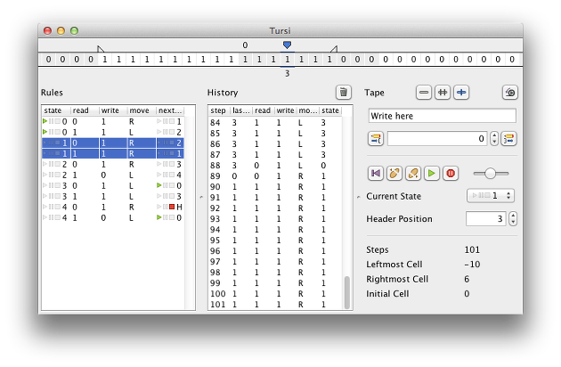

Tursi is a cross-platform simulator for the turing machine. It loads turing tables from an easy to write file format and executes them in a function rich GUI or a fast console mode.
Tursi was written in 2013 to replace the old Turing Applet, and is backward-compatible to its file format.